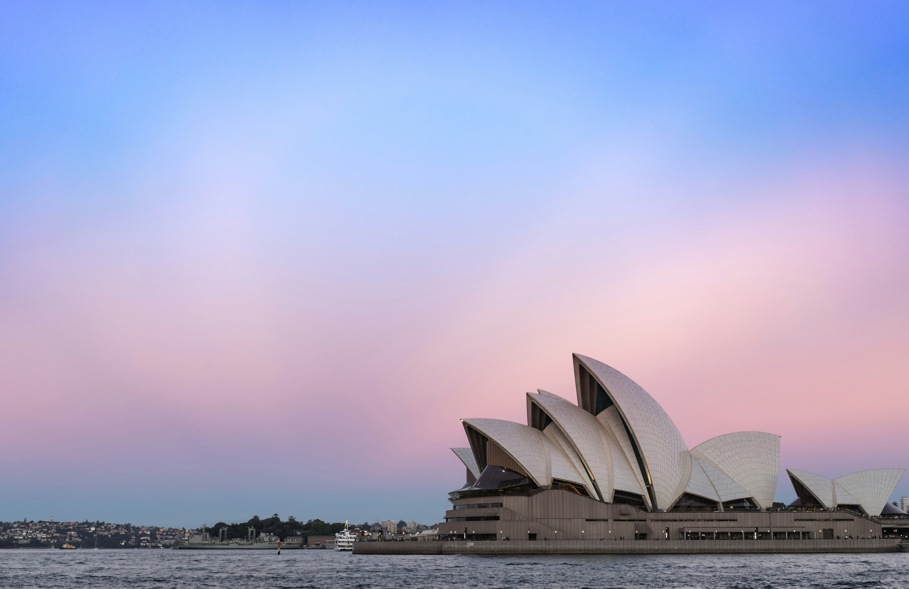
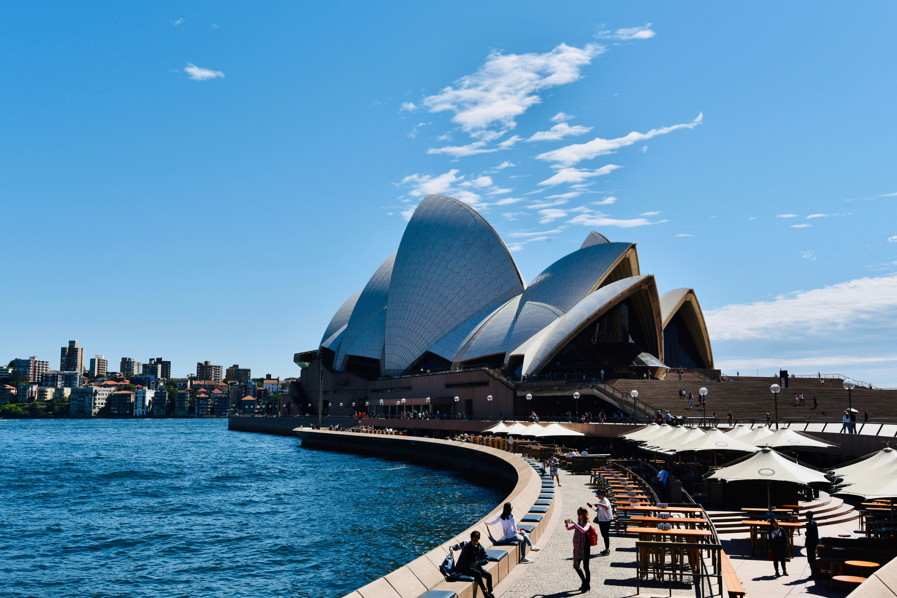
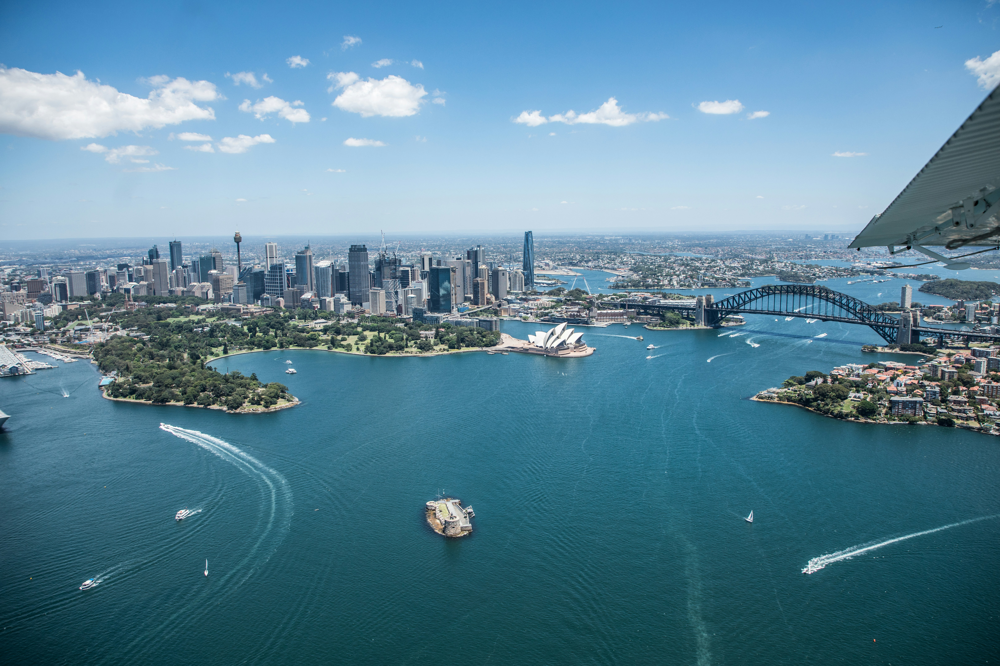
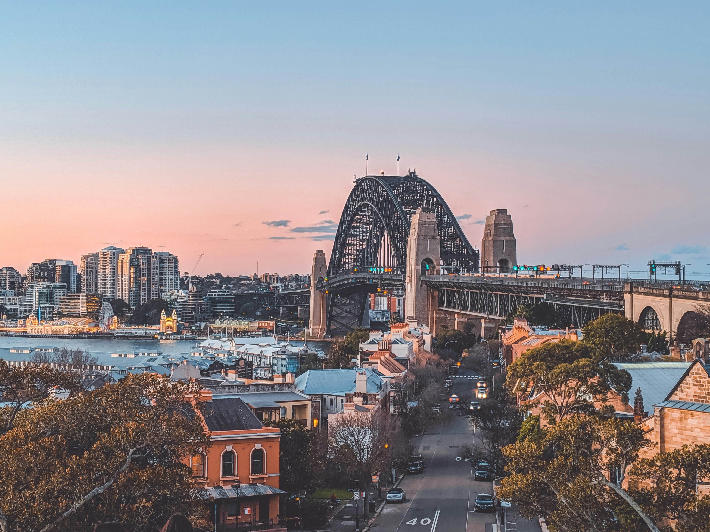

visit Sydney and enjoy the trip

The Sydney Opera House is Australia's most recognizable building and a UNESCO World Heritage Site, with its distinctive white sail-shaped shells designed by Danish architect Jørn Utzon. Beyond its stunning exterior, the Opera House contains multiple performance venues hosting opera, ballet, theater, and concerts throughout the year. Guided tours take you backstage to rehearsal rooms, the Concert Hall with its magnificent organ, and reveal fascinating stories about the building's controversial 14-year construction.
Attend a performance in the evening when the building is illuminated against the harbor for an unforgettable cultural experience. The outdoor forecourt offers free entertainment and stunning photo opportunities with the Harbour Bridge as backdrop. Dine at Bennelong restaurant within the Opera House for fine Australian cuisine with panoramic harbor views, or enjoy casual meals at the outdoor Opera Bar watching ferries glide past. The surrounding Royal Botanic Gardens provide peaceful walking paths and perfect picnic spots with Opera House views.

The Bondi to Coogee coastal walk is Sydney's most spectacular clifftop trail, spanning 6 kilometers along dramatic sandstone cliffs with breathtaking ocean views. The path passes through six beautiful beaches including Bondi, Tamarama, Bronte, Clovelly, and Coogee, each with its own character and ocean pools carved into the rocks. Stop for a swim at Bronte's ocean pool, watch surfers catching waves at Tamarama, or snorkel in Clovelly's protected bay.
The walk takes 2-3 hours at a leisurely pace with plenty of stops for photos, coffee, or beach dips. Sculptures by the Sea transforms the route each spring with over 100 artworks installed along the clifftops. Start early morning to avoid crowds and heat, or time your walk for sunset's golden light. Numerous cafes and restaurants line the beaches for refreshment breaks. The coastal path showcases Sydney's laid-back beach lifestyle, with locals jogging, swimming, and surfing in one of the world's most beautiful urban settings.

Taronga Zoo sits on a hillside overlooking Sydney Harbour, offering the unique experience of seeing koalas, kangaroos, and other Australian wildlife with the iconic harbor backdrop. Home to over 4,000 animals from 350 species, the zoo focuses on conservation and provides opportunities to get up close with native Australian creatures. Walk through kangaroo enclosures where these marsupials roam freely, watch koalas sleeping in eucalyptus trees, and learn about platypuses, wombats, and Tasmanian devils.
The zoo is easily accessible by scenic ferry ride from Circular Quay, making the journey part of the adventure with stunning harbor views. Daily keeper talks and animal shows educate visitors about wildlife conservation efforts. The Sky Safari cable car provides aerial views across the zoo and harbor. For a special experience, book the Roar and Snore overnight camping program to sleep near the lions and wake to giraffe encounters. The Wild Ropes course offers adventure activities for thrill-seekers, while the harbourside location ensures spectacular photo opportunities combining wildlife and Sydney's famous landmarks.